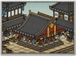

Requires
- Arts:


Enables
- Buildings: 
Effects
- +5 per turn to economic growth from mastery of the arts
Description
While traditionalists may enjoy the cut and thrust of haggling and barter, government officials naturally prefer a trading system that can be codified, recorded and above all, taxed. The introduction of standard coinage makes the collection of taxes easier, and makes the work of a merchant easier too. Town wealth improves, with long term benefits to the ruling classes also, as wealth can always be taxed.
The Kinza Mint was located in Edo, and its most important coin was the koban, a small coin struck in 1601 at the request of Tokugawa Ieyasu. Kinza also made the oban, a larger gold coin, but as this was much more valuable than the koban, it had a limited circulation and tended to be given as a gift or used to pay rewards. Creating these intricate and beautiful coins was a hereditary business, and the families that did so worked under the watchful eye of the Tokugawa government. Before Tokugawa Ieyasu introduced this idea of standardised money, different types of coins were used all over Japan, causing endless confusion and argument amongst merchants and tax officials over their precise values. Some were made of gold while others, mostly in the countryside, were made of the less expensive copper.